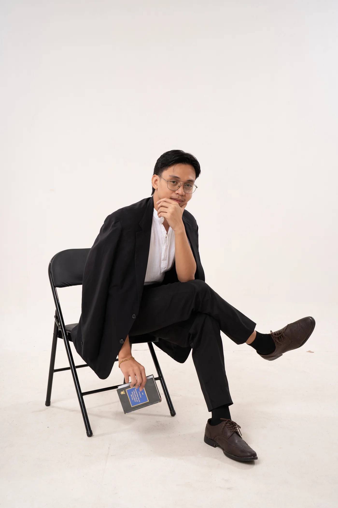
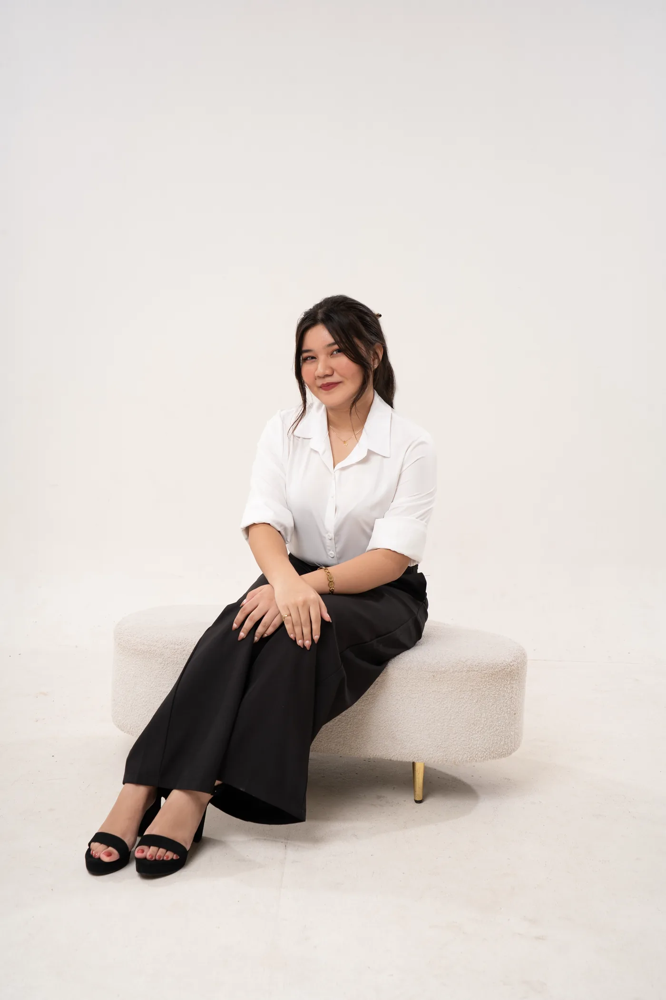
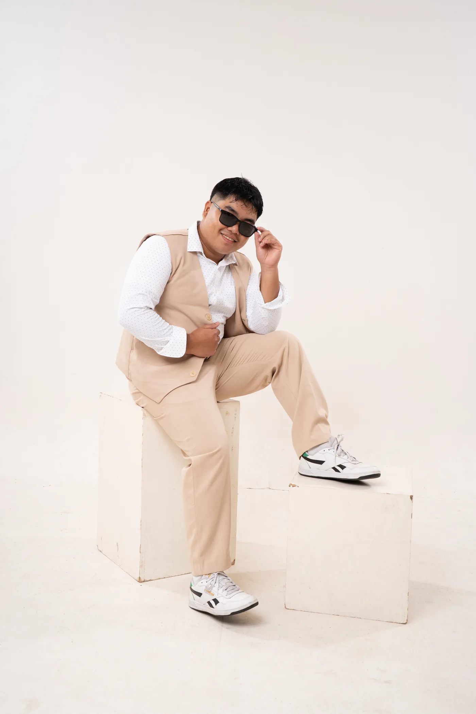

Meet Our Officers

Meet the dedicated student leaders who serve and represent the Political Science students of UST-L.
Meet the dedicated student leaders who serve and represent the Political Science students of UST-L.


"Don't settle for mediocrity; always strive for the best."
View Profile →
"Not every closed door is a rejection; some are a redirection."
View Profile →
"Negativity is inevitable, but a resilient mind turns every doubt and setback into fuel, rising higher, even when the world tries to hold you down."
View Profile →
"The sky is the limit but cherish every minute"
View Profile →"Be certain within, regardless without."
View Profile →
"Quietly making an impact."
View Profile →
"Virtute et fide. — With courage and faith."
View Profile →
"YOU ONLY LIVE ONCE- kaya go lang #YOLO"
View Profile →
"Rooted in purpose, reaching for more."
View Profile →"Be the change you wish to see in the world."
View Profile →"Growth starts where comfort ends"
View Profile →
"True leadership is measured by the leaders it creates."
View Profile →